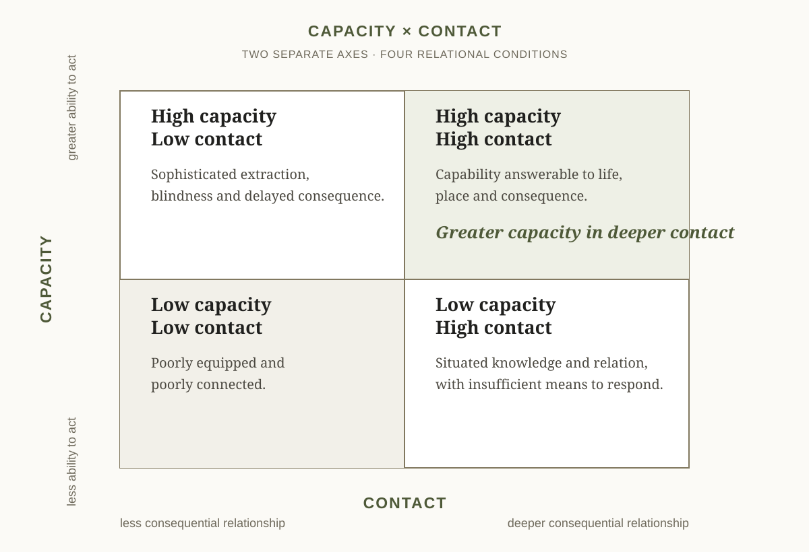

Document function: thematic diagnosis and open economic inquiry
This paper does not activate a field, funding relationship, stewardship record or stewardship agreement. Publication is not validation.
How can a civilisation increase its capacity to act without losing contact with the living systems, people and places that give action meaning and consequence?
Abstract
Human societies possess rapidly expanding technological, financial and informational capacity while many living foundations deteriorate and many people carrying restoration, care and commons work remain unpaid, underpaid or exhausted. The problem may therefore be not only insufficient capacity, but capacity losing contact with consequence.
This paper asks whether a plural stewardship economy is already forming: livelihoods, institutions and resource flows through which caring for soil, water, food, biodiversity, wildlife, habitat, seeds, communities and shared knowledge can become economically viable without becoming economically ownable.
Three non-compensatory conditions organise the inquiry: Land / Life, Steward Viability and Governance / Commons. Ecological gains cannot justify steward depletion; viable livelihoods cannot compensate for ecological damage; neither can excuse coercive governance. Financial and material support must likewise keep land and ecology, steward livelihood, and coordination visible rather than hiding them inside one project total.
A local stewardship action may be local in authority and planetary in function. The challenge is to recognise that contribution without converting living places, knowledge or people into assets, datapoints or institutional property.
The hypothesis is simple and demanding:
Can infrastructures created to support life remain subordinate to life?
Position of Inquiry
This paper speaks from a small place. It is written within Spiralweb Stewardship Association, a newly formed Danish non-profit association developing a small number of early relationships with regenerative practitioners and places. It does not speak for those people or places, and none of these relationships validates the propositions that follow.
The paper asks planetary questions from inside an unfinished practice, not from a clean outside or from authority over the field. Its scale of inquiry is deliberately larger than its present operational reach. That asymmetry should remain visible.
1. More Capacity, Less Contact
Modern societies can model atmospheric systems, map forests from orbit, sequence genomes, automate production, move capital across continents and retrieve immense bodies of knowledge within seconds.
Artificial intelligence intensifies this trajectory. Translation, analysis, programming, administration, visual production and research assistance can increasingly be performed or accelerated by machines. Robotics extends similar changes into physical environments.
The effects on employment will not follow one simple line. Some occupations will disappear, many will change, new ones will arise, and the results will differ by country, class, sector and institution. The International Labour Organization's 2025 refined global index treats occupational exposure to generative AI primarily as potential task and job transformation rather than a direct forecast of replacement.
There is no automatic path from technological productivity to human freedom. Productivity gains can produce shorter working time and wider public capacity. They can also produce concentration, precarity, surveillance and intensified consumption.
Beneath that uncertainty lies a more durable question:
What kinds of human contribution do societies choose to recognise and sustain?
Care is one example.
Stewardship is another.
There is no shortage of necessary work. Soils require restoration. Watersheds require care. Habitats require protection and reconnection. Seeds require custodians. Species require room to live and move. Food systems require transformation. Cities require cooling, water management and ecological repair. Communities require facilitation, memory and conflict capacity. Young people require credible pathways into meaningful work.
None of this becomes unnecessary because machines become more capable. Some of it becomes more urgent.
The paradox is not that humanity is running out of work. It is that the relationship between socially necessary work, economically recognised work and a viable human life is becoming increasingly unstable.
2. Capacity and Contact
A useful distinction is between capacity and contact.
Capacity includes the ability to observe, calculate, communicate, build, finance, coordinate, automate, model, store knowledge and intervene.
Contact means remaining in consequential relationship with soil, water, climate, species, food, place, community, culture, memory, human limits and the effects of action.
The distinction is not between modernity and tradition, technology and nature, institutions and communities, or North and South.
A farmer using satellite imagery may have profound contact with a landscape. A low-technology institution may be deeply detached from local consequence. A global scientific model may reveal a pattern no local observer can see. A precise model may still fail if it displaces those who must live with the decision.
The question is relational:
Does increased capacity deepen our ability to perceive and respond to living reality, or progressively insulate us from it?
A society can have high capacity and high contact.
The problem is not capacity itself.
The problem is capacity without contact.
A conservation programme may produce excellent reporting while exhausting the people responsible for implementation. A funding system may require evidence so burdensome that communities divert scarce capacity away from the work being funded. A machine-learning system may integrate enormous datasets while erasing provenance and uncertainty. A regenerative project may improve vegetation while weakening the people carrying it.
Each case represents a different form of disconnection.
The task is therefore not simply to slow development. It is to restore feedback between capacity and consequence.
3. Capacity × Contact
If capacity and contact are treated as separate axes rather than opposites, a different picture of development appears.
Low capacity and low contact leave people poorly equipped and poorly connected.
High capacity with low contact can produce sophisticated extraction, blindness and delayed consequence.
High contact with low capacity can leave communities deeply knowledgeable about place while unable to respond to forces far larger than themselves.
The interesting horizon is:
greater capacity in deeper contact.
That may mean powerful science combined with local ecological memory. Advanced AI combined with human responsibility. Global communication combined with bioregional intelligence. Capital capable of moving quickly and communities capable of saying no. Sophisticated monitoring combined with the legitimacy of Unknown. Professional stewardship combined with the right to pause.
This is difficult because capacity tends to scale through abstraction, while contact is often preserved through relationship.
The question of the coming decades may therefore be less whether to choose scale or place than how larger capacities can remain answerable to particular places without absorbing them.

4. Life as the Primary Balance Sheet
Economic systems require abstraction. Budgets, prices, accounts and indicators allow societies to coordinate across distance and time.
The problem begins when the abstraction becomes more authoritative than the conditions it was intended to represent.
A regenerative economy therefore requires another ordering principle:
Life is the primary balance sheet.
This is not a proposal for one master ecological indicator. The UN System of Environmental-Economic Accounting — Ecosystem Accounting is an important effort to place ecosystem extent, condition and services beside economic accounts. GP22 makes a related but normative claim: the representation must remain subordinate to the living conditions represented.
Life includes more than land in a narrow sense. A minimum Land/Life reading may involve four connected registers:
Genetic life
Heirloom seeds, farmers' varieties, landraces, crop wild relatives, local plant material, microbial diversity and the capacity of living populations to reproduce and adapt.
Species life
Plants, pollinators, birds, insects, soil organisms, aquatic life, wildlife and other locally relevant beings — not only as providers of services to humans, but as participants in living systems with their own requirements for survival and continuity.
Habitat and landscape relation
Soil, water, vegetation, food webs, nesting and refuge, wetlands, agroecosystems, green and blue corridors, movement routes and the connection or fragmentation between habitats.
Ecological function
Soil formation, pollination, infiltration, cooling, nutrient cycling, water retention, carbon cycling, disturbance recovery and other place-specific processes through which life continues.
Human societies exist within these conditions. Economics exists within them. Technology and institutions exist within them.
Three non-compensatory forms of carrying capacity provide a minimum shared reading.
Land / Life
What is happening to the living place, its species, habitats, reproductive capacity, water, soil, food systems and locally relevant ecological relations?
Steward Viability
What is happening to the people carrying the work? Can they live? Do they have time, health, transport, tools, support and room for an ordinary life? Can they pause, refuse or leave?
Governance / Commons
What is happening to the relationships through which action occurs? Who decides? Who controls resources and records? Can people disagree and correct? Does money purchase authority? Can local participants refuse?
The dimensions are non-compensatory.
Ecological improvement cannot justify destroying the people carrying the work. Healthy stewards cannot compensate for ecological destruction. Ecological and human gains cannot excuse coercive or corrupt governance.
No one form of carrying capacity should conceal the degradation of another.
5. The Work Outside the Balance Sheet
Much stewardship already happens.
Farmers read soil and rain. Fishers notice changing waters. Families maintain seeds and food knowledge. Community members care for springs, paths and commons. People raise seedlings, restore wetlands, protect wildlife habitat, plant urban shade, connect fragmented green spaces, teach children, observe species and preserve ecological memory.
Much of this work is invisible or only partially visible to formal economies.
Some is paid through agriculture, forestry, conservation, public employment, tourism or research. Some occurs through associations, households, religious communities, schools and informal networks. Some is supported by philanthropy or public programmes. Some is performed because nobody else will do it.
When stewardship depends primarily on moral commitment, those carrying it subsidise society with their time, income, health and future security.
That is not a durable economic model.
A narrow market question asks:
What does contact cost?
That question matters. Contact requires time, travel, translation, wages, patience, memory and responsive institutions.
But it is incomplete. A whole account must also ask:
What capacity does contact create? What harm does it prevent? Who already subsidises it? And what does disconnection cost?
The challenge is therefore not simply to create more “green jobs”. It is to recognise a wider ecology of modern stewardship livelihoods: land and water care, seed custody, biodiversity observation, habitat restoration, food systems, documentation, commons facilitation, youth learning, cultural memory, local adaptation, critical friendship and other forms not yet visible under one name.
The examples are not a taxonomy.
The point is that stewardship can become professional, economically viable and socially meaningful without ceasing to be situated.
6. Stewardship Must Become Attractive
A society cannot build an ecological transition primarily on sacrifice.
Stewardship cannot only be correct. It must become attractive.
That means more than adequate income. It means work that can be dignified, professionally developmental, intellectually interesting, technologically capable, compatible with family life, connected to place, recognised by institutions and respected by peers.
The issue is sharpened by a weakening social contract. For many people, especially younger generations and insecure or aspiring middle groups, education, work and conformity no longer reliably lead to housing, stability, voice or a believable future. The pattern is not identical across India, China, the United States, Uganda, Morocco, Pakistan or Europe. Nor does it produce one shared political awakening. It can lead to withdrawal, migration, hypercompetition, protest, mutual aid, polarisation or authoritarian longing.
The United Nations World Social Report 2025 documents growing economic insecurity, inequality and distrust. The ILO's Global Employment Trends for Youth 2026 reports continuing barriers to decent work and a large global population of young people outside employment, education or training.
Stewardship is not a moral programme for correcting young people. It is one possible part of a more credible social settlement: a way for contribution to produce livelihood, competence, belonging, ecological agency and visible consequence.
If caring for land, food, biodiversity and commons is culturally represented as poorly paid sacrifice while extractive or purely speculative work offers security and status, exhortation will not solve the problem.
The task is to make stewardship a credible future without making one steward identity compulsory.
AI may help. It can reduce administration, connect observations with relevant knowledge, translate languages and institutional vocabularies and make specialised information more accessible.
That could allow a steward to become more capable without becoming less situated — but only if technology remains subordinate to the work.
The objective is not to turn every steward into a data worker. It is to make sophisticated capacity available without requiring the field to reorganise itself around the machine.
7. Bioregional Intelligence
Neither local knowledge nor scientific knowledge is sufficient alone.
Local knowledge can be deep, longitudinal and situated while remaining partial or contested. Scientific knowledge can reveal processes invisible to ordinary observation while remaining distant from local conditions. Institutions can preserve memory and coordinate action while becoming detached from both.
The useful capacity lies in the relationship between them.
IPBES work on diverse values of nature and Indigenous and local knowledge offers an important precedent for holding multiple knowledge systems without reducing all value to one economic language.
We use bioregional intelligence to describe a society's continuing ability to notice what is happening in its living systems and respond before damage becomes irreversible.
It may connect:
local observation
↔︎ ecological and cultural memory
↔︎ scientific knowledge
↔︎ instruments and sensing
↔︎ institutional memory
↔︎ collective judgement
↔︎ action
↔︎ consequence
↔︎ renewed observation
This is a flow, not merely a stock.
A community can possess inherited ecological knowledge and still lose bioregional intelligence if conditions change faster than knowledge can adapt or the young see no future in carrying it. A government can possess extensive datasets and still lack bioregional intelligence if institutions cannot translate them into situated action.
The objective is not to decide which knowledge system dominates. It is to preserve differences while making consequential contact possible.
8. Planet and Pixel
Earth-system science can identify planetary processes such as climate change, biosphere integrity, land-system change, freshwater disruption and biogeochemical flows.
Yet nobody lives at the scale of “the planet”.
People live somewhere. Water falls somewhere. Soil erodes somewhere. A corridor is broken somewhere. A seed variety disappears somewhere. A decision is made somewhere. A person becomes exhausted somewhere.
This creates two linked questions:
How does planetary knowledge become relevant where someone can actually act?
And:
How can what happens in one place become visible to larger systems without being stripped of context?
Remote sensing, scientific observation and AI create unprecedented possibilities. A field, neighbourhood, wetland or watershed can potentially be understood through local memory, weather, hydrology, soil, biodiversity, land use, social conditions, scientific literature, regional processes and planetary signals.
We might call this pixel precision.
But precision is not authority.
More data does not automatically produce better judgement.
Increasing resolution should improve relationship with place, not replace place with its digital representation.
9. A Stewardship Economy Is Already Forming
The term stewardship economy should remain provisional.
It does not describe one sector, profession, funding mechanism or platform.
It points toward a heterogeneous field in which human labour, knowledge, institutions and resources are directed toward the long-term viability of living systems.
Restoration programmes, regenerative farms, farmer seed networks, community funds, Indigenous and local stewardship, urban food initiatives, landscape organisations, public authorities, philanthropic institutions, scientists, social enterprises and digital coordination systems already carry pieces of this work.
They do not form one movement.
They do not need to.
Some begin with ecology. Some with livelihood, justice, food, culture, land rights, public governance, climate adaptation, youth or community autonomy.
The field is heterogeneous because the living world and human societies are heterogeneous.
What matters is that an economic space is becoming visible around work previously treated as externality, unpaid care or marginal environmental activity.
This space is not exhausted by money or employment. Fields may become more capable through time, rest, seeds, tools, transport, knowledge, teaching, creativity, frugal innovation, borrowing and sharing, critical friendship, care, cultural meaning, local markets and the power to decide or refuse.
These are not interchangeable currencies. One may be abundant while another is dangerously scarce.
Abundance is not a fourth condition stream, universal currency or contribution score. It is a prismatic way of noticing what allows people and places to receive, combine, learn, give and regenerate without depletion.
GP22 does not propose to own or define the field.
It asks whether recognising it helps more capacity return to life.
10. What Stewardship Holds and Creates
A stewardship economy cannot be understood through ecological outcomes or paid work alone. Its value is plural because living systems are plural. One situated action may hold or create several forms of capacity at once, without making them interchangeable.
The following value groups are not a universal measurement framework. They are a way to see more of what ordinary accounts frequently separate or omit.
Living foundations
Soil formation, water retention, watershed health, microclimate, disturbance recovery, ecological fertility and the continuing capacity of a place to support life.
Biodiversity and continuity of life
Wildlife, habitat, pollinators, soil organisms, aquatic life, food webs, green and blue corridors, locally adapted seeds, landraces, crop wild relatives and the reproductive capacity through which living populations adapt and continue.
Food and local provisioning
Food forests, farms, fisheries, agroforestry, urban growing, nurseries, seed exchange, household food security, seasonal knowledge, processing and local market relations.
Human and steward viability
Livelihood, time, health, safety, transport, tools, learning, professional development, rest, family compatibility, succession and the freedom to pause, refuse or leave.
Relational and commons capacity
Trust, reciprocal care, conflict capacity, local authority, shared governance, access rules, institutional memory, privacy, accountability and the ability to make and correct decisions together.
Knowledge, culture and imagination
Situated observation, scientific inquiry, ecological and cultural memory, language, provenance, intergenerational learning, practical creativity, frugal innovation, artistic attention and the capacity to imagine a viable future.
Material and economic abundance
Money, wages, grants, public support, tools, land, seeds, infrastructure, exchange, lending, sharing, voluntary contribution, local enterprise, cooperative income and other forms of material support.
Propagation and reform capacity
Farmer-to-farmer learning, independently reproduced practice, seed and plant circulation, new local markets, changed professional routines, public learning and institutional reform.
These value groups are not additional condition streams, dashboard categories or reporting requirements. They help articulate what may be held, lost, created or circulated within and across the three non-compensatory conditions.
These groups overlap. A food forest can hold nutrition, soil formation, shade, genetic diversity, wildlife habitat, learning, livelihood and local exchange. An urban green corridor can cool a neighbourhood, retain water, reconnect habitat, create work and offer young people a practical relationship with place. A seed network can conserve genetic diversity while carrying culture, reciprocity, adaptation and local economic capacity.
A local stewardship action can therefore be local in authority and planetary in function.
The fact that its consequences cross boundaries does not transfer ownership upward. Planetary significance does not make a local field the property of a global organisation, donor, scientific institution or narrative.
It creates a question of regenerative reciprocity:
How can wider societies recognise and support locally held functions upon which shared planetary conditions depend, without purchasing the place, the knowledge or the authority?
This is one route toward re-embedding externalities in a larger householding. The aim is not to give everything a price, nor to preserve every present condition. It is to keep soil loss, species decline, unpaid stewardship, exhausted communities and weakened trust visible in economic and institutional decisions so that damage can be prevented, reduced or reversed.
The planetary commons is therefore not only a global institution. It is also the cumulative consequence of local places remaining alive enough to continue their functions.
11. Money Must Learn to Move Differently
If stewardship is to become viable, resources must move toward it.
But funding introduces power.
The question is not simply:
How can more money reach regenerative projects?
It is:
How can resources support stewardship without purchasing authority over the field?
One minimum distinction keeps three financial and material resource flows visible.
A — Land and Ecology
Resources for ecological activity, materials, seeds, tools, infrastructure, restoration and observation.
B — Steward Viability
Resources enabling the people carrying situated stewardship work to live, learn, travel, rest and continue.
C — Coordination and Governance
Resources for administration, facilitation, accounting, translation, accountability, learning, privacy, public communication and institutional continuity.
The three flows are not departments, fixed percentages or competing moral claims. They show different functions inside one living economy.
A single initiative may require expenditure across all three. A nursery may require seeds and irrigation, paid steward time, bookkeeping and local decisions about access. The purpose of separation is not to split the nursery into three projects, but to prevent one visible expenditure from hiding the work and governance that make it possible.
The flows also differ from the three condition readings. Resource flows show where money or material support is directed. Land/Life, Steward Viability and Governance/Commons ask what is actually happening. Expenditure in a category is not evidence of a healthy condition.
Keeping the flows visible does not produce balance by itself.
It makes imbalance harder to hide.
12. Institutions Have a Metabolism Too
Stewardship does not happen only in fields. Associations, public authorities, cooperatives, research bodies, funders and other intermediaries also perform necessary work. They employ people, hold contracts, translate knowledge, maintain records, raise resources, provide legal accountability and sustain relationships over time.
This work is not unreal because it is called administration. Nor is it legitimate merely because an institution performs it.
The useful question is not what percentage an organisation is morally permitted to “take”. It is whether cost, function, authority and consequence remain visible.
There is therefore no universal correct overhead percentage. A fixed ratio can obscure both underfunded coordination and institutional excess.
More informative questions are:
- What work or capacity is being funded?
- Who performs it and bears its real cost?
- Which living or relational function does it support?
- What authority does not move with the money?
- What becomes stronger, and what might become weaker?
- Can the arrangement be corrected, reduced or left?
Professional wages, local livelihoods, administration, materials and governance are all legitimate costs when they correspond to necessary work. The discipline is to keep institutional metabolism answerable to purpose and consequence — not to pretend that coordination is free, and not to allow coordination to become self-justifying.
Institutional metabolism does not create a fourth condition. The viability of people carrying institutional work remains part of Steward Viability; institutional authority and accountability remain part of Governance / Commons.
13. Economic Recognition Without Economic Ownership
Once stewardship becomes economically visible, it can be captured.
It could become another asset class. Local observers could become gig workers. Communities could be paid per datapoint. Ecological records could become proprietary. Universal steward scores could shape opportunity. Algorithms could allocate resources through simplified indicators. Biodiversity could become valuable mainly because it generates financial claims. Platforms could acquire power over places by controlling the support infrastructure.
The attempt to recognise stewardship could detach it from the relations that give it meaning.
A stewardship economy must therefore distinguish:
economic recognition from economic ownership.
Money can support stewardship.
It must not automatically purchase authority, data, consent, ecological claims, community representation or future control.
Before consequential support moves, three questions expose much of the capture risk:
- Does the support purchase or silently shift authority and control?
- Does it obtain rights over data, stories, representation, claims or future production beyond the bounded purpose?
- Does it impose tempo, dependency, hosting or reporting work that the field cannot freely carry or later leave?
These questions do not replace legal, financial or local review. They show where support may need to be narrowed, amended, delayed or refused.
This is why the field cannot be reduced to an investment thesis.
Regenerative finance may matter. So may public finance, ordinary wages, philanthropy, procurement, cooperative income, memberships, fellowships, local enterprise, householding, reciprocity and community funds.
Plurality is both practical reality and safeguard.
14. Legibility Without Extraction
Money requires accountability. Learning requires memory. Scientific collaboration requires evidence. Public institutions require documentation.
The answer cannot be to reject legibility.
But legibility has a cost.
Every form, indicator, photograph, meeting and spreadsheet consumes human capacity. A regenerative infrastructure can become extractive by asking too many reasonable questions.
Require no more legibility than the consequence justifies — but no less accountability than the consequence requires.
A small, reversible field inquiry does not need the assurance architecture of a multimillion-euro programme. A large resource flow cannot responsibly rely on a few photographs and goodwill.
The burden should scale with resources, risk, claims, consequences and reversibility.
This is not weak evidence.
It is proportionate evidence.
15. Memory Before Metrics
A stewardship record should not begin by asking how a field scores.
It should begin by remembering what happened.
What was observed? By whom? Under what conditions? What remained uncertain? What decision followed? What resources moved? Who disagreed? What happened next? What changed, failed or was corrected?
This is especially important for relations that ordinary accounts forget: a seed's provenance, a bird's return, a steward's exhaustion, a decision not to plant, a conflict over access, a corridor that begins to function or a local practice that spreads independently.
Such memory can later serve different purposes. A scientist may require one subset, a funder another, a community another and a public authority another.
The aspiration is:
Speak once, translate many times.
Not because one record satisfies every epistemology. It cannot.
But people closest to a field should not repeatedly reconstruct the same reality because institutions use different reporting grammars.
Translation should occur at the interface and preserve provenance.
The objective is:
translation without capture.
A stewardship ledger can hold this memory through a simple sequence:
observation → interpretation → hypothesis → action → later result or unresolved condition
It is not formal accounting, although it may reference formal transactions. It is not a universal database. It is a place-bound memory through which consequences normally externalised from a transaction can return to judgement.
16. A Shared Reading Is Not a Score
Memory alone does not produce judgement.
People must periodically ask:
What does this mean?
A shared reading might examine Land / Life, Steward Viability and Governance / Commons through Green, Yellow, Red or Unknown.
These are not scores and should not be aggregated.
Unknown is not failure. It means that available standing is insufficient for responsible judgement.
There is a prior distinction. Sometimes no bounded field condition or legitimate reading purpose exists. In that case the streams should not be coloured at all.
No reading in scope is not a fifth colour and not the same as Unknown. It prevents a relationship, open inquiry or whole place from being rated merely because an institution can see it.
The purpose is not to calculate whether a field is regenerative. It is to notice what requires attention and identify no more than a few bounded next actions.
Then reality answers.
17. Correction Is Part of the Economy
Conventional project systems often treat correction as evidence that planning failed.
Living systems suggest the opposite.
Conditions, people, weather and knowledge change. Actions produce unexpected consequences.
A regenerative economy must be able to say:
We were wrong.
We do not know.
This is not working.
Stop.
Wait.
Ask someone who knows more.
Try something smaller.
Leave this alone.
Non-action can be consequential. Planting may need to wait for rain. A relationship may remain quiet. A field may decline funding. A steward may need rest. A programme may need to stop.
Low visible activity is not a single condition. It may reflect ecological timing, responsible pause, livelihood pressure, unresolved authority, loss of contact or actual breakdown. These conditions require different responses. Resource-constrained latency should not be mistaken for field failure; nor should silence be romanticised when it conceals crisis. The task is to distinguish them before activity is demanded or support is withdrawn.
Inactivity is not inherently responsible. Accuracy matters more than an aesthetics of incompletion.
The point is that an architecture capable only of producing activity will eventually produce activity when activity is harmful.
The operational grammar is simple:
action → consequence → observation → memory → shared reading → correction → next action
Correction is completed only when something returns: an altered action, clarified responsibility, changed record, refusal, pause or learning that helps another inquiry ask a better question.
Recording correction without returning consequence preserves institutional memory while leaving contact unchanged.
18. AI, Robotics and the Revaluation of Human Work
AI and robotics sharpen the economic question because they challenge a long-standing assumption: that socially useful contribution, paid employment and demand for human labour will continue to track one another closely.
They may not.
Productivity gains may concentrate among capital owners. New consumption may be created to sustain conventional employment. Working hours may fall. Public transfers may grow. New occupations may emerge around technology. These possibilities can coexist.
Another possibility deserves attention:
What if some expanding productive capacity sustains human time devoted to stewardship, care, commons, culture, learning and ecological repair?
This paper proposes no single redistribution mechanism. It does not assume automation automatically creates a public surplus. Nor does it suggest replacing disappearing jobs with one profession called Steward.
The point is more basic.
As the relation between employment and contribution becomes less stable, societies must decide what forms of human presence are worth sustaining.
Stewardship belongs in that conversation — not as consolation work after machines become productive, but as work living systems have needed all along.
19. Plural Livelihoods, Not One Steward Model
A stewardship economy should not produce a universal profession.
People and places differ too much.
Livelihoods may combine employment, farming, cooperative enterprise, public contracts, municipal work, fellowships, grants, community finance, tourism, education, restoration, memberships, research, cultural work, care and other forms.
A seed custodian, watershed observer, agroforestry farmer, youth mentor, biodiversity steward, urban corridor facilitator, public planner and local market organiser may all contribute to stewardship without belonging to one occupational category.
The objective is not uniformity.
It is sufficient stability for stewardship to remain possible.
Professionalisation should not automatically mean bureaucratisation. Some work requires formal expertise and certification. Some requires intimate knowledge accumulated through decades of living somewhere. Some requires both.
A plural economy must recognise these differences without forcing them into one hierarchy.
20. Intelligence Must Return to the Ground
AI can connect a local observation with scientific literature, satellite information, historical records, funding requirements, legal frameworks and learning from other fields.
This can dramatically increase capacity.
It also creates epistemic danger. Fluent synthesis can conceal uncertainty. Machine confidence can exceed evidence. Complexity can become recommendation faster than humans can examine the assumptions underneath it.
The appropriate response is neither rejection nor surrender.
UNESCO's Recommendation on the Ethics of Artificial Intelligence places human dignity, prevention of harm, transparency and human oversight at the centre of AI governance. Applied to situated consequence, this means that assistance may expand while final mandate and responsibility remain human.
AI can participate in inquiry.
It should not hold the final mandate.
The decision to act, publish, fund, intervene, stop or accept responsibility remains human.
The question is never only:
What can the machine infer?
It is also:
Who has standing?
Who bears the consequence?
Who can refuse?
Who remains responsible?
Increasing intelligence is useful only insofar as it deepens contact rather than replacing it.
21. Interfaces, Not Empire
Because the stewardship economy is plural, the design problem is not how to build one platform large enough to contain it.
It is interface.
A community funder may know how to move small amounts through trust. A landscape organisation may hold long-term restoration. An Earth-system research community may understand processes beyond local observation. A local association may know who is trusted and what is changing. A public authority may hold democratic mandate. A technology community may develop useful coordination. A farmer may know something none of them know.
The question becomes:
Can these capacities meet without one absorbing the others?
Good interfaces preserve difference.
A relational funding process should not automatically become a trust score. Local knowledge should not automatically become open data. Scientific measurement should not become a local decision because it is precise. A donor should not gain authority because money moved.
Sometimes a small adapter is enough.
Sometimes the correct relationship is no integration.
The invitation is not:
Join our system.
It is:
What are you already carrying?
And:
Is there a place where what you carry and what we carry could make something else more capable?
The beneficiary may be a watershed, neighbourhood, forest, seed network, species, community or future generation.
An interface has its own carrying capacity. An intermediary can lose contact by accepting more relationships, questions and promised responses than named people can hold.
Who holds the relationship — and who holds the holder?
Records are cheap. Promised responses are work. A responsible interface must narrow or pause intake when human capacity, governance or response horizon is insufficient.
22. The Danger of Success
The stewardship economy may be most vulnerable if it succeeds.
Visibility attracts capital, visitors, volunteers, researchers, media, partners and requests for access. Legibility attracts standardisation. Professionalisation attracts accreditation. Data attracts platforms. Positive outcomes attract replication.
This can help.
It can also transform a living field into a product category.
Attention is a resource flow. It can bring care, knowledge and opportunity. It can also create hosting work, exposure, interruption and pressure to represent more than the field knows.
A field's ability to attract attention must not be confused with its capacity or desire to receive it.
Public visibility confers neither physical access nor support entitlement. A field, steward or local community must be able to regulate arrival, refuse integration, remain quiet and grow at an absorbable pace.
The danger is managed neither by rejecting money nor by rejecting scale. It is managed through boundaries:
- Who owns the record?
- Who can refuse?
- Who defines success?
- Who interprets evidence?
- Who benefits?
- Who bears hosting and reporting work?
- Who may pause or leave?
- Can support continue without purchasing authority?
- Can a successful structure remain repairable?
These are economic questions because they concern power as much as money.
23. A Different Picture of Progress
Conventional development often imagines progress as increased throughput: more production, investment, infrastructure and technological capacity.
Ecological critique responds by emphasising limits.
Both matter.
A living-system perspective adds another axis:
capacity × contact.
Capacity without contact can become destructive. Contact without capacity can leave people unable to respond to larger forces.
The objective is neither technological acceleration nor romantic localisation.
It is greater capacity in deeper contact.
Progress then appears not as the maximum a society can do, but as the capability it can hold while remaining answerable to the living consequences of its use.
The same standard changes how scaling is understood.
Replication is not the only growth. A field may grow through deeper soil, stronger wildlife habitat, more viable stewards, distributed seed, improved local judgement, a new market relation, an institutional correction or independent adoption by neighbours.
The relevant movement may be propagation rather than expansion:
not more of the organisation, but more capacity for life.
24. An Open Economic Field
The phrase stewardship economy may prove useful or be replaced.
The field matters more than the name.
Many questions remain:
- Who decides what deserves support?
- How are local claims tested?
- What happens when livelihood and ecological limits conflict?
- How is local and Indigenous knowledge protected?
- How much documentation is enough?
- Who owns records?
- Can institutions fund uncertain outcomes?
- Can a donor support without acquiring influence?
- Can AI increase capability without becoming authority?
- Can a system reward stewardship without producing performance for the system?
- Can a field stop, leave or remain Unknown?
- Can a local contribution be recognised as planetary without becoming globally owned?
- Can intermediary viability and field viability strengthen one another rather than compete?
The hypothesis must also be able to fail.
Warning signs include:
- stewards spending more time feeding the system than caring for the field;
- relationship records exceeding human holder capacity;
- memory existing only on intermediary-controlled infrastructure;
- money purchasing tempo, data or authority;
- recurring updates becoming compulsory proof of commitment;
- wildlife, seeds or culture being recorded only when they support a financial claim;
- public stories moving faster than local consent and evidence;
- fields becoming dependent on an intermediary to remain themselves;
- coordination growing while land and steward viability weaken.
If these patterns persist and cannot be corrected, the supporting infrastructure is not remaining subordinate to life.
We do not yet know whether it can.
25. Capacity Returning to Life
Humanity has accumulated extraordinary capacity. The coming decades may multiply it.
AI and robotics could make knowledge, production and coordination cheaper. Earth observation may become extraordinarily precise. Capital may become increasingly programmable. Networks may connect almost anyone to almost anything.
None of this guarantees regeneration.
The decisive question is what these capacities become connected to.
They can deepen extraction, concentration, consumption and insulation from consequence.
Or some can return toward another task:
restoring the capacity of people and places to notice, care, act, learn and continue.
That does not require one global architecture.
The planet is already full of intelligence distributed through ecosystems, communities, sciences, cultures, institutions, practices and people.
The challenge may be less to create intelligence than to restore the conditions under which different forms of intelligence can meet without destroying one another.
Less to organise life than to become answerable to it.
Less to invent more work than to recognise the work already waiting to be done.
Less to make every place legible than to ensure that increasing capacity does not sever contact with consequence.
If a stewardship economy is emerging, its purpose may be simple:
to make it possible for more human capacity to return to the work of life.
Not because humans stand outside the living world as its guardians.
Because we are already inside it.
And because an economy that cannot sustain the conditions of its own existence has misunderstood what an economy is for.
Closing Proposition
The challenge of the next economy may not be finding enough work for humans after machines become more capable.
It may be learning to recognise, support and dignify the immense amount of human work that living systems have needed all along.
The test is whether increasing capacity can return into contact — with soil, water, species, seeds, community, consequence and life — without capturing what it touches.
Life remains the primary balance sheet.
Reality gets the last word.
Selected References and Practice Lineages
These sources locate parts of the inquiry in established research, public standards and adjacent practice. They do not validate the argument.
- International Labour Organization and NASK. Generative AI and Jobs: A Refined Global Index of Occupational Exposure, 2025.
- International Labour Organization. Global Employment Trends for Youth 2026, 2026.
- United Nations Department of Economic and Social Affairs. World Social Report 2025: A New Policy Consensus to Accelerate Social Progress, 2025.
- UNESCO. Recommendation on the Ethics of Artificial Intelligence, adopted 2021.
- IPBES. Methodological Assessment Report on the Diverse Values and Valuation of Nature, 2022.
- IPBES. Thematic Assessment Report on the Interlinkages among Biodiversity, Water, Food and Health, 2024.
- IPBES. Updated Living Guidelines for Working With Indigenous and Local Knowledge in IPBES, 2022.
- Food and Agriculture Organization of the United Nations. Second Global Plan of Action for Plant Genetic Resources for Food and Agriculture, 2011.
- United Nations Environment Programme. To counter climate change, Colombian cities weave nature back into their urban fabric, 2024.
- Global Indigenous Data Alliance. CARE Principles for Indigenous Data Governance.
- United Nations Statistics Division. System of Environmental-Economic Accounting — Ecosystem Accounting, adopted as an international statistical standard in 2021.
- Ostrom, Elinor. Governing the Commons: The Evolution of Institutions for Collective Action. Cambridge University Press, 1990.
- World Resources Institute and partners. Principles for Locally Led Adaptation.
- Food and Agriculture Organization of the United Nations. Global Farmer Field School Platform.
This paper continues the Second Spiral — Applied Inquiries. Publication opens an inquiry; it does not validate a model, activate a field relationship or confer standing on the Association.
Licensed CC BY 4.0. Please cite the version line (candidate v0.4, August 2026) when re-using. Verify empirical claims for your own context before formal use.
Suggested citation: Engberg, Lars A. (2026). Capacity, Contact, and the Emerging Stewardship Economy. Green Paper 22, candidate v0.4. Spiralweb Stewardship Association. https://papers.spiralweb.earth/papers/capacity-contact-stewardship-economy
papers.spiralweb.earth · spiralweb.earth